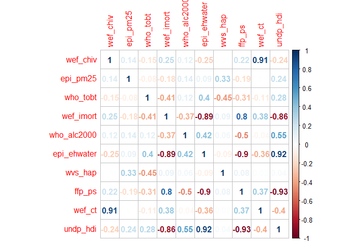
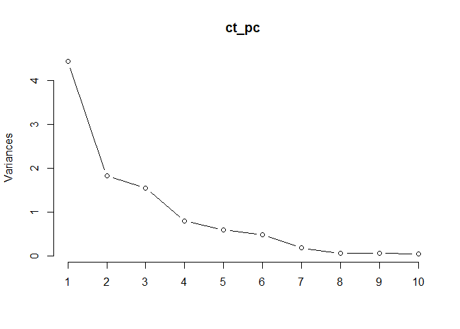
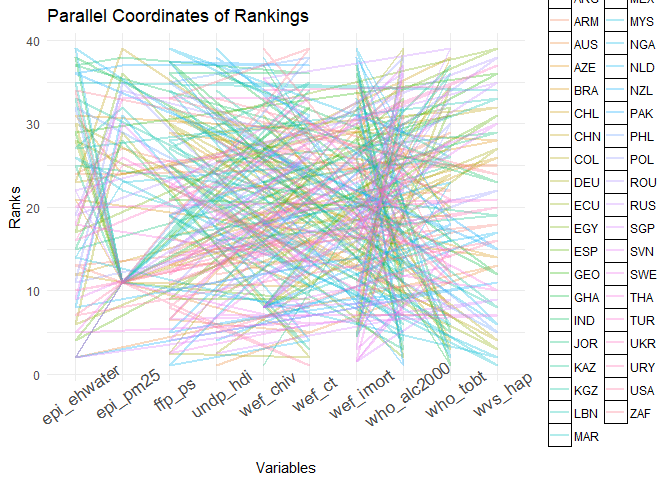

Data Analysis: Which Country has the Best Health in the World?
The Mother of all Social Science Datasets: Quality of Government
If you aren’t familiar with this dataset, I suggest spending a few minutes looking through the 200-page data dictionary that comes along with it. It’s basically a collection of collections of social science data: it’s like a metadata repository of datasets from the World Health Organization, the UN, and many other independent researchers broken down into various “themes.” The focus today will be on the theme of “Health.” There are over 400 different variables recorded in here, so I’ll definitely be continuing this series.
In order to determine which country is the overall best country for living a long happy life, I’ve decided to rate each country on 10 dimensions (based on the availability of such data in the QoG dataset). The 10 dimensions are:
- The HIV prevalence in %
- Air quality index, based on PM 2.5 concentrations (100 is best air, 0 is worst air)
- Total tobacco use
- Infant mortality: deaths per 1,000 births
- The level of sanitation and public water cleanliness
- The degree of stability of public services (10 meaning very unreliable, 1 being very stable)
- Per capita alcohol consumption from the year 2000 onward
- Subjective happiness ratings 1-4 (very happy)
- Rate of tuberculosis
- The UN's Human Development Index score (0-100) best
Notice that for some measures, low scores are good and for others high scores are good. We will take care of that issue in the final ranking section.
Using these 10 dimensions: Which country in the world has the best Health Outcomes?
First we read in the data and select our 10 variables. After omitting missing values, we end up with a sample of 39 countries from all over the globe. Note that this is not a completely random sample–only those countries with no missing data on the 10 dimensions were included in the analysis.
library(tidyverse)
df_f <- read.csv('qog.csv')
df <- df_f %>%
select(matches('cname'),matches('ccodealp'),matches('hiv'),matches('pm25'), matches('tobt'), matches('imort'),
matches('alc2000'), matches('ehwater'), matches('wvs_hap'), matches('ffp_ps'),
matches('wef_ct'), matches('hdi'))%>%
na.omit()
rm(df_f)
head(df)
## cname ccodealp wef_chiv epi_pm25 who_tobt wef_imort who_alc2000
## 7 Azerbaijan AZE 0.20 94.30 23.5 30.8 2.14
## 8 Argentina ARG 0.40 100.00 25.3 12.7 7.93
## 9 Australia AUS 0.20 100.00 16.0 4.1 9.71
## 14 Armenia ARM 0.20 85.76 28.0 14.7 3.91
## 21 Brazil BRA 0.45 100.00 16.1 12.9 7.32
## 36 Chile CHL 0.40 100.00 38.9 7.8 7.16
## epi_ehwater wvs_hap ffp_ps wef_ct undp_hdi
## 7 77.47 3.052584 5.4 95.0 0.758
## 8 92.52 3.199185 4.3 25.0 0.826
## 9 100.00 3.277956 2.0 6.5 0.937
## 14 83.21 3.091120 4.1 52.0 0.741
## 21 84.66 3.264543 5.9 46.0 0.754
## 36 94.25 3.084253 4.5 16.0 0.845
#Which 39 countries?
for (n in df$cname){
cat(paste(n, " "))
}
## Azerbaijan Argentina Australia Armenia Brazil Chile China Colombia Ecuador Georgia Germany Ghana India Kazakhstan Jordan Kyrgyzstan Lebanon Malaysia (1966-) Mexico Morocco Netherlands New Zealand Nigeria Pakistan (1971-) Philippines Poland Romania Russia Singapore Slovenia South Africa Spain Sweden Thailand Turkey Ukraine Egypt United States Uruguay
At this point you might want to pause for a second and choose which countries you think are top 5 for best health, and bottom 5 for worst health. You can compare your intuition with our result at the end.
Moving on, let’s check to make sure no crazy values here.
summary(df)
## cname ccodealp wef_chiv epi_pm25
## Argentina : 1 ARG : 1 Min. : 0.02203 Min. : 0.00
## Armenia : 1 ARM : 1 1st Qu.: 0.10000 1st Qu.: 77.67
## Australia : 1 AUS : 1 Median : 0.20000 Median :100.00
## Azerbaijan: 1 AZE : 1 Mean : 0.85569 Mean : 84.69
## Brazil : 1 BRA : 1 3rd Qu.: 0.42500 3rd Qu.:100.00
## Chile : 1 CHL : 1 Max. :17.90000 Max. :100.00
## (Other) :33 (Other):33
## who_tobt wef_imort who_alc2000 epi_ehwater
## Min. : 6.30 Min. : 2.30 Min. : 0.040 Min. : 43.45
## 1st Qu.:17.85 1st Qu.: 6.10 1st Qu.: 2.605 1st Qu.: 78.74
## Median :23.80 Median :12.20 Median : 6.130 Median : 84.75
## Mean :23.48 Mean :17.06 Mean : 5.635 Mean : 84.40
## 3rd Qu.:28.70 3rd Qu.:18.50 3rd Qu.: 8.490 3rd Qu.: 94.93
## Max. :39.50 Max. :77.80 Max. :11.030 Max. :100.00
##
## wvs_hap ffp_ps wef_ct undp_hdi
## Min. :1.872 Min. :1.500 Min. : 3.60 Min. :0.5250
## 1st Qu.:3.018 1st Qu.:3.100 1st Qu.: 16.00 1st Qu.:0.7290
## Median :3.187 Median :4.700 Median : 50.00 Median :0.7630
## Mean :3.146 Mean :4.674 Mean : 88.85 Mean :0.7705
## 3rd Qu.:3.299 3rd Qu.:5.950 3rd Qu.: 99.00 3rd Qu.:0.8485
## Max. :3.613 Max. :9.100 Max. :1003.00 Max. :0.9370
##
All right, everything looks reasonable. Now we can start our comparisons.
First off, I’m interested in correlations between the various dimensions.
library(corrplot)
df %>%
select_if(is.numeric)%>%
cor()%>%
corrplot(method='number')

This is super interesting and it’s worth spending some time examining.
-
Not surprisingly tuberculosis and HIV rates are highly correlated. This suggest systematic problems in controlling contagious disease.
-
Bad air is correlated with low happiness. That makes sense, but is worth reiterating. Your happiness may be determined by how clean your country’s air is. Cough China. Cough
-
Not surprisingly, high infant mortality is associated with low water sanitation.
-
Essentially the Human Development Index is measuring the same thing as the public services variable.
-
Higher alcohol consumption is associated with LOWER infant mortality and higher human development. Interesting. Perhaps this has something to do with the extra leisure time brought on by more development. Citizens of poorer countries do not have the luxury of sitting around and drinking beers with their buddies.
There are plenty more interesting correlations, but these are just some of them.
Let’s use a “Perceptual Map” to try to visualize the relationships among countries on these dimensions.
If you’re not familiar with perceptual maps, I suggest the very good book by Chris Chapman and Elea Feit called “R for Marketing Research and Analytics.” Basically we will run PCA on the 10 dimensions, reduce to two dimensions, then visualize the groupings of the countries on the two dimensions.
#Keep row names for ID. Very useful bit of code
rownames(df) <- df[,2]
#Run PCA. Make sure to scale your data first. Otherwise the PCs will reflect the dimensions with huge units
ct_pc <- prcomp(df[,3:ncol(df)], scale. = TRUE)
summary(ct_pc)
## Importance of components:
## PC1 PC2 PC3 PC4 PC5 PC6
## Standard deviation 2.1058 1.3494 1.2430 0.89281 0.76787 0.69319
## Proportion of Variance 0.4434 0.1821 0.1545 0.07971 0.05896 0.04805
## Cumulative Proportion 0.4434 0.6255 0.7800 0.85972 0.91868 0.96673
## PC7 PC8 PC9 PC10
## Standard deviation 0.42199 0.24829 0.23495 0.19430
## Proportion of Variance 0.01781 0.00616 0.00552 0.00378
## Cumulative Proportion 0.98454 0.99070 0.99622 1.00000
The summary() function is very useful in deciding how many PCs to keep. Here we can see that 5 PCs cover over 90% of the variance in our original 10 variables. We’ll only keep the first two that explain 62.5% of variance.
If you’re more of a visual person, you can use a screeplot to find the “elbow” where the marginal variance captured by the next PC seems to flatten out, suggesting that adding more PCs is not contributing much to the overall explained variance.
plot(ct_pc, type='l')

If I were going to use this in a predictive model I might decide to keep 4-5 PCs, but here we will only keep the first two for easy visualization.
To visualize the results, we use the biplot() function. FYI South Africa is “ZAF.”
biplot(ct_pc, cex=c(.7,.8), expand=1.2,
sub='Comparing countries on the 10 dimensions of Health')
This biplot contains a ton of information, but its interpretation can be tricky. Let’s break it down.
First notice that the x/y axes are PC1 and PC2, which cumulatively explain about 65% of the variation in the original variables. So already we know there is more to this story than just these two PC scores.
Second, the red arrows have both a magnitude and an angle. The angle of these arrows relative to the x/y axes show you the degree to which these original variables are being “captured” by the PCs. So nearly vertical lines are well captured by PC2 (HIV and Tuberculosis rates), while PC1 seems to be capturing Infant mortality, public services, water sanitation and the Human Development Index.
The angles between the two original variables (red lines) represent the direction of correlation. So infant mortality and public services are very positively correlated, while HIV rates and Tobacco use are negatively correlated. These interpretations should match our results from the correlation matrix above. Finally, and this one I’m not 100% sure about, but the length of the arrows represents the standard deviation in the original variables. So longer arrows represent variables with a higher variance. Again, don’t quote me on that.
Pitfalls in interpreting the biplot
Biplots are subtle creatures. If you don’t believe me, check out some of the StackOverflow discussions about them. For now, we’ll focus on just the most practical implications and pitfalls.
First, the positioning of the countries on the biplot is relative and so changing the number of variables and/or adding/removing countries will affect the relationships among them.
Second, remember I mentioned that PC1 & PC2 only account for about 65% of the variance of all original variables. This means there may be other relationships between countries that are not accounted for in this 65% of variance. In short, there is more to the story than what you see in this biplot. As Chapman and Feit explain, “When we look at PC1 and PC2 scores we are looking at the ‘largest magnitude similarities,’ which could hide other, smaller differences in the other PCs.” With that proviso, let’s quickly review what the biplot tells us.
-
South Africa (ZAF) is way out in left field, probably due to infant mortality and HIV rates.
-
The high tobacco use in countries like China, Jordan, and Egypt are clustering them there.
-
India and Pakistan have similar levels of infant mortality, tuberculosis (high numbers, which are bad), and unstable public services.
-
Nigeria seems to have the negative combo of both high infant mortality and tuberculosis coupled with HIV and bad public services.
In some cases of many useful PCs, you might want to also visualize PC3 vs PC4
You can use the choices=c(3,4) to remake the plot with PC3 and 4 as the axes. Just for fun we’ll try it.
Because up to 5 PCs explain 90% of variance, it might be worthwhile to check this plot out as well. Think of this plot as showing how PC3 and 4 “Soaked up” (Thanks Prof. Soumya Ray!) the remaining variance not captured by PC1 and 2.
biplot(ct_pc, cex=c(.7,.8), expand=1.2, choices=c(3,4),
sub='Comparing countries on the 10 dimensions of Health')

Now we see that PC3 represents different variables (happiness) and PC4 captures a lot of variation in PM 2.5 and Alcohol consumption. Interestingly, now the USA seems close to Nigeria due to similar scores in alcohol consumption and happiness.
Now we’ve looked at relationships among countries on the 10 dimensions. Let’s try to answer the question of which country is the best for “health.”
In order to do this, we will rank countries by their scores on each variable and the compute which countries has the overall lowest (best) rank on all 10 dimensions. We will crown that country as “the best for health.” But one problem we will have is that some dimensions have high scores for “good” and others have low scores for “good.”
#Separate columns into those where higher is better
up_ranks <- df[,colnames(df) %in% c("epi_pm25","epi_ehwater",
"undp_hdi", "wvs_hap")]
#Separate where lower scores are better
low_ranks <- df[,colnames(df) %in% c("who_alc2000", "ffp_ps", "wef_ct",
"wef_imort", "wef_chiv", "who_tobt")]
#Now we rank
df_low_rank <- apply(low_ranks, 2, rank)
#Use opposite ranking method
df_high_rank <- apply(up_ranks, 2, function(x) rank(-x))
#now assemble
df_ranked <- cbind(df_low_rank, df_high_rank)
#Here's what we end up with. 1 means best and 39 means worst.
head(df_ranked)
## wef_chiv who_tobt wef_imort who_alc2000 ffp_ps wef_ct epi_pm25
## AZE 18 19 34 10 25.0 29.0 24
## ARG 27 22 21 27 14.5 16.0 11
## AUS 18 7 7 35 6.5 5.0 11
## ARM 18 29 24 14 13.0 21.0 27
## BRA 30 8 22 25 29.0 19.0 11
## CHL 27 38 13 23 16.5 10.5 11
## epi_ehwater wvs_hap undp_hdi
## AZE 31 28 21.5
## ARG 13 18 12.0
## AUS 2 13 1.0
## ARM 24 25 25.5
## BRA 21 14 23.0
## CHL 12 26 11.0
Let’s try some visualizations on these data to get a better feel. Visualizing ranked data is not something I do often, so I welcome any feedback on which methods are most suited for displaying these data.
First try a heatmap of ranks.
library(gplots)
heatmap.2(df_ranked,dendrogram = 'none', scale='none', key=FALSE, cexRow=.6,
main='Red = low rank (Good), White = (Bad)')
I kept the trace on there because it shows you where the colors fall (column-wise) relative to the average. For example, for HIV rates, you can see whitish colors mean higher scores and thus the trace pops out to the right. Dark red colors move the trace left. You can see that Jordan has the best ranking for HIV prevalence.
You can also see a big group of European countries that are dark red on all the basic life statistics, but do not do well on tobacco use or alcohol consumption–two strong predictors of early mortality.
We will finish off by crowning our winner and visualizing its performance
#convert to Df
df_ranked <- as.data.frame(df_ranked)
#Find average ranks per country
score_mat <- as.matrix(apply(df_ranked, 1, mean))
#then rank by lowest average rank
final_ranks <- apply(score_mat, 2, rank)
#sort to get final list
sort_ranks <- apply(final_ranks, 2, sort)
sort_ranks
## [,1]
## SGP 1.0
## SWE 2.0
## NZL 3.0
## AUS 4.0
## USA 5.0
## NLD 6.0
## SVN 7.0
## DEU 8.0
## MYS 9.0
## URY 10.0
## ESP 11.0
## ARG 12.0
## MEX 13.0
## POL 14.0
## TUR 15.0
## JOR 16.0
## CHL 17.0
## ECU 18.0
## COL 19.0
## BRA 20.0
## LBN 21.0
## KAZ 22.0
## EGY 23.0
## ARM 24.0
## MAR 25.5
## THA 25.5
## PHL 27.0
## AZE 28.5
## ROU 28.5
## KGZ 30.0
## GHA 31.0
## CHN 32.0
## GEO 33.0
## RUS 34.0
## UKR 35.0
## PAK 36.0
## NGA 37.0
## IND 38.0
## ZAF 39.0
So there you have it, according to our criteria the top 5 countries for “health” (as defined by yours truly) are: Singapore, Sweden, New Zealand, Australia and the USA.
The last 5 countries are: Ukraine, Pakistan, Nigeria, India, and South Africa. Wow, sorry my South African friends. If I had to guess why it’s the HIV/Tuberculosis rates. Perhaps the situation has improved in recent years, as these data are several years old.
I’d say these results match up pretty well with expectation, though I did not expect South Africa to fare so poorly.
What’s the best way to visualize these results?
My first idea was to use something like a parallel coordinate plot. But with 39 countries it is going to be ugly.
#useful function when converting from matrix to dfs
df_ranked <- rownames_to_column(df_ranked)
df_ranked %>%
gather(-rowname, key='vars', value='scores')%>%
ggplot(aes(vars, scores, group=rowname, color=rowname))+
geom_path(size=1, alpha=.3)+
theme_minimal() + theme(axis.text.x = element_text(size = 13,
angle = 35), legend.key = element_rect(fill = NA)) +labs(title = "Parallel Coordinates of Rankings",
x = "Variables", y = "Ranks")

Yes, as I suspected it’s chaos with 39 countries.
My other idea was to facet by variable type and color by score and look for the countries with the smallest bars (indicating low=good ranks). I think this is better.
Don’t mind the gargantuan chunk of code. But basically in order to do this you have to reshape the data into “long” form so you can facet by variable. If you haven’t mastered this technique, it is well worth your time doing so. Use the gather() function from the tidyverse library.
#Try another one where on each var is a facet with ranks
df_ranked %>%
gather(-rowname, key='vars', value='scores')%>%
ggplot(aes(reorder(rowname, scores), scores, fill=scores))+
geom_col()+
scale_fill_gradient(low = "#0000F7",high="#FFDD00")+
facet_wrap(~ vars, ncol= 10)+
coord_flip() + theme(plot.subtitle = element_text(colour = NA,
vjust = 1), plot.caption = element_text(vjust = 1),
axis.ticks = element_line(colour = NA),
panel.grid.major = element_line(colour = NA),
panel.grid.minor = element_line(colour = NA),
axis.title = element_text(family = "serif",
colour = NA), axis.text = element_text(colour = "gray4"),
axis.text.x = element_text(size = 8),
axis.text.y = element_text(size = 7),
plot.title = element_text(hjust = 0.5),
panel.background = element_rect(fill = NA),
legend.key = element_rect(fill = NA)) +labs(title = "Ranking for each Health Dimension",
x = "Country", y = "Ranks", fill = "Ranking") + theme(axis.title = element_text(size = 8),
axis.text = element_text(size = 5, colour = "gray14",
vjust = 0), plot.title = element_text(size = 8)) + theme(axis.title = element_text(size = 7),
axis.text = element_text(size = 1), plot.title = element_text(size = 13))
Summary
So there we go. We can see South Africa did poorly on water, public services, human development, HIV and tuberculosis, which contributed to its position as dead last.
Meanwhile, Singapore is top of the list in nearly every category except Tuberculosis.
Most of the European countries would have come out clearly on top had their alcohol and tobacco consumption levels been lower. Germany would’ve destroyed the other countries (… no pun intended…) if Germans didn’t drink so much god-damned Hefeweizen and Berliners stopped rolling their hipster cigarettes on the U-Bahn.
In the future I’ll perform more analyses on world countries. I’m looking at comparing Education or Civil Society/Culture as my next blog post. Stay tuned.
Here’s the citation in case you’d like to play around with the data yourself. Dahlberg, Stefan, Sören Holmberg, Bo Rothstein, Natalia Alvarado Pachon & Richard Svensson. 2018. The Quality of Government Basic Dataset, version Jan18. University of Gothenburg: The Quality of Government Institute, http://www.qog.pol.gu.se <doi:10.18157/QoGBasJan18>